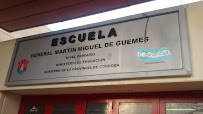
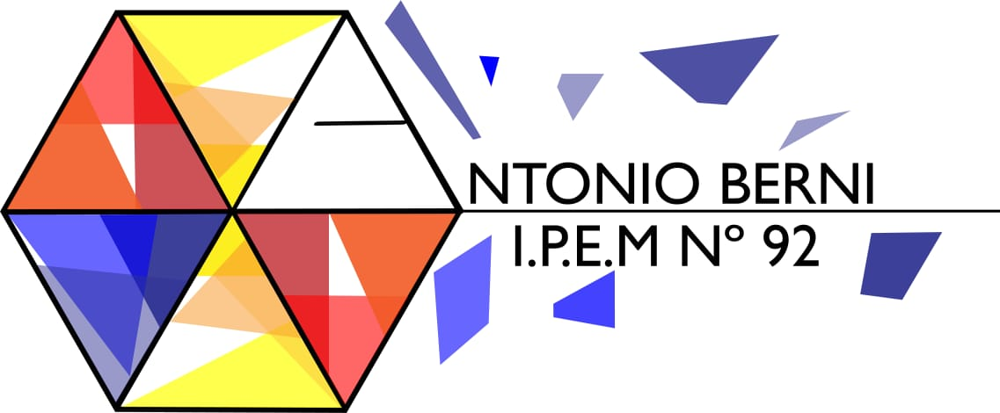

-

Martin Miguel de Güemes
(07/2011-10/2011) Estudios Primarios
-

IPEM N° 92 "Antonio Berni"
(01/2014-07/2014)Estudios CBU
-

Delta S.A.
(05/2019-03/2020) Encargado
Descripción
Controlar la ejecución diaria del proyecto parte eléctrica. Análisis, generar alternativas y Resolución de posibles problematicas.